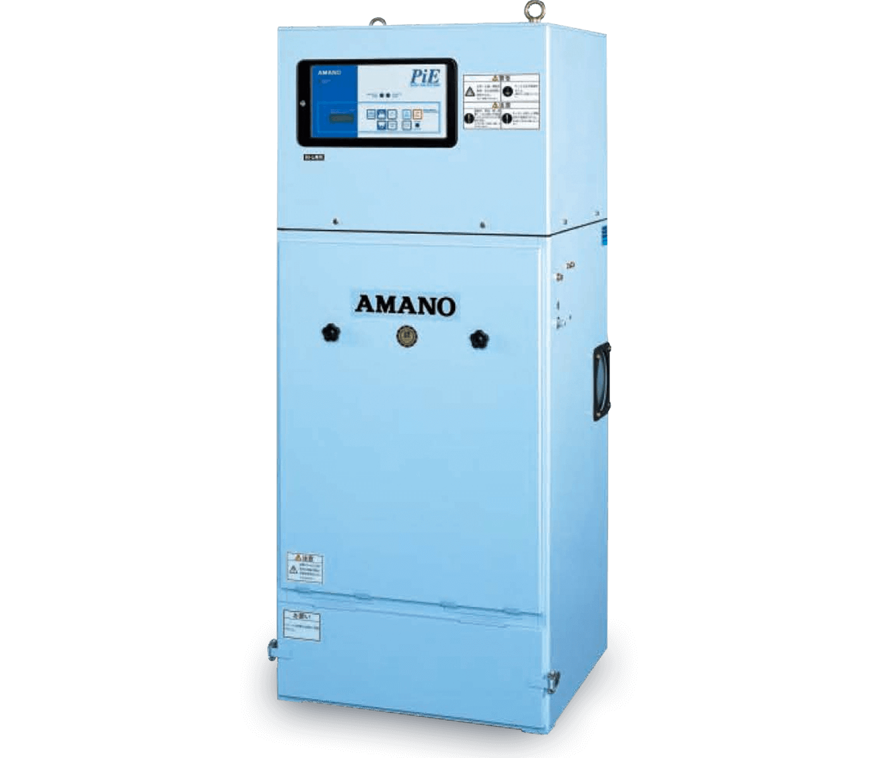

Cartridge 彈筒式集塵機
Cartridge Dust Collector
- 一體成形彈筒濾管，輕便型集塵機
適用粉塵作業：鑽孔、研磨、拋光、粉碎、切斷、混合、攪拌、鋸板、裝袋、卸料、機械加工、粉體輸送、精密工業、電子工業、粉塵回收。

型式
- 標準型
- 微粒型
- 耐蝕型
- 防靜電型
- 防爆型
- 漏斗型
- 槽上型
最新型高效率過濾管
- 集塵效率最高
- 粉塵振落完全乾淨
- 差壓小，處理風量大
- 濾管一體成型
規格表
| 型號 | 動力(kw) | 風量(CMM) | 真空度(mmAq) | 過濾面積(m2) | 空氣消耗量(NL/min) | 吸入口徑(mm) | 尺寸(mm )W*L*H | 收塵容量(L) | 重量(kg) | 噪音值(dB[A]) |
|---|---|---|---|---|---|---|---|---|---|---|
| 型號 | Pi-15 | |||||||||
| 動力(kw) | 0.75 | |||||||||
| 風量(CMM) | 0‧10‧15 | |||||||||
| 真空度(mmAq) | 250‧165‧50 | |||||||||
| 過濾面積(m2) | 4.5 | |||||||||
| 空氣消耗量(NL/min) | 9 | |||||||||
| 吸入口徑(mm) | 125 | |||||||||
| 尺寸(mm )W*L*H | 650*400*1435 | |||||||||
| 收塵容量(L) | 17 | |||||||||
| 重量(kg) | 115 | |||||||||
| 噪音值(dB[A]) | 65±2 | |||||||||
| 型號 | Pi-30 | |||||||||
| 動力(kw) | 1.5 | |||||||||
| 風量(CMM) | 0‧20‧30 | |||||||||
| 真空度(mmAq) | 250‧220‧140 | |||||||||
| 過濾面積(m2) | 9 | |||||||||
| 空氣消耗量(NL/min) | 17 | |||||||||
| 吸入口徑(mm) | 150 | |||||||||
| 尺寸(mm )W*L*H | 620*650*1580 | |||||||||
| 收塵容量(L) | 24 | |||||||||
| 重量(kg) | 165 | |||||||||
| 噪音值(dB[A]) | 70±2 | |||||||||
| 型號 | Pi-45 | |||||||||
| 動力(kw) | 2.2 | |||||||||
| 風量(CMM) | 0‧30‧45 | |||||||||
| 真空度(mmAq) | 250‧205‧85 | |||||||||
| 過濾面積(m2) | 13.5 | |||||||||
| 空氣消耗量(NL/min) | 25 | |||||||||
| 吸入口徑(mm) | 200 | |||||||||
| 尺寸(mm )W*L*H | 820*650*1650 | |||||||||
| 收塵容量(L) | 40 | |||||||||
| 重量(kg) | 210 | |||||||||
| 噪音值(dB[A]) | 70±2 | |||||||||
| 型號 | Pi-60 | |||||||||
| 動力(kw) | 3.7 | |||||||||
| 風量(CMM) | 0‧40‧60 | |||||||||
| 真空度(mmAq) | 290‧250‧150 | |||||||||
| 過濾面積(m2) | 18 | |||||||||
| 空氣消耗量(NL/min) | 33 | |||||||||
| 吸入口徑(mm) | 250 | |||||||||
| 尺寸(mm )W*L*H | 1040*700*1820 | |||||||||
| 收塵容量(L) | 40 | |||||||||
| 重量(kg) | 290 | |||||||||
| 噪音值(dB[A]) | 73±2 | |||||||||
| 型號 | Pi-75 | |||||||||
| 動力(kw) | 5.5 | |||||||||
| 風量(CMM) | 0‧60‧90 | |||||||||
| 真空度(mmAq) | 330‧265‧80 | |||||||||
| 過濾面積(m2) | 27 | |||||||||
| 空氣消耗量(NL/min) | 46 | |||||||||
| 吸入口徑(mm) | 300 | |||||||||
| 尺寸(mm )W*L*H | 1434*904*1820 | |||||||||
| 收塵容量(L) | 60 | |||||||||
| 重量(kg) | 460 | |||||||||
| 噪音值(dB[A]) | 73±2 | |||||||||
| 型號 | Pi-120 | |||||||||
| 動力(kw) | 7.5 | |||||||||
| 風量(CMM) | 0‧80‧120 | |||||||||
| 真空度(mmAq) | 330‧265‧55 | |||||||||
| 過濾面積(m2) | 36 | |||||||||
| 空氣消耗量(NL/min) | 55 | |||||||||
| 吸入口徑(mm) | 300 | |||||||||
| 尺寸(mm )W*L*H | 1464*1174*1890 | |||||||||
| 收塵容量(L) | 74 | |||||||||
| 重量(kg) | 560 | |||||||||
| 噪音值(dB[A]) | 73±2 | |||||||||
| 型號 | Pi-150 | |||||||||
| 動力(kw) | 11 | |||||||||
| 風量(CMM) | 0‧120‧180 | |||||||||
| 真空度(mmAq) | 330‧265‧80 | |||||||||
| 過濾面積(m2) | 54 | |||||||||
| 空氣消耗量(NL/min) | 82 | |||||||||
| 吸入口徑(mm) | 380 | |||||||||
| 尺寸(mm )W*L*H | 1654*1544*2260 | |||||||||
| 收塵容量(L) | 140 | |||||||||
| 重量(kg) | 890 | |||||||||
| 噪音值(dB[A]) | 73±2 |